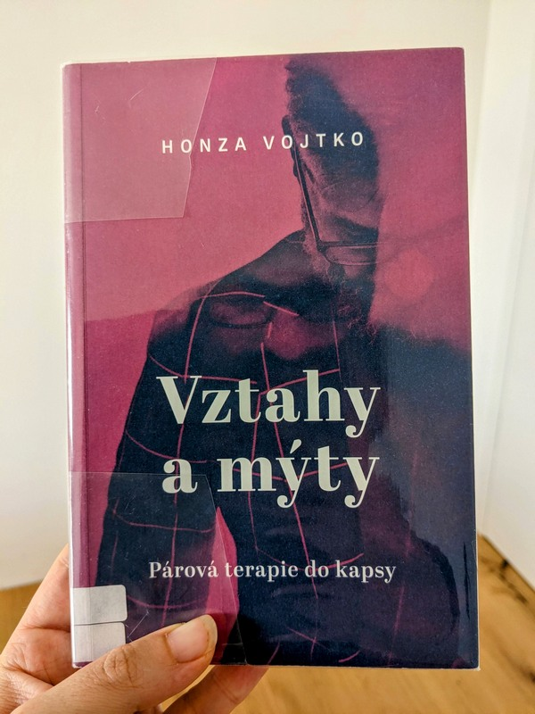
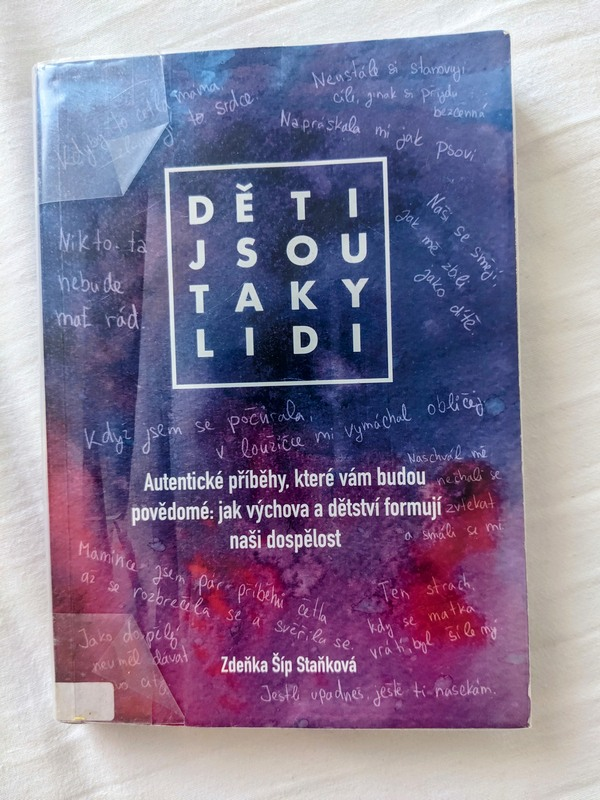
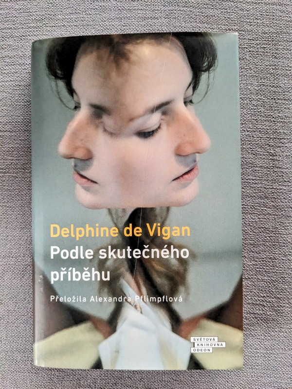
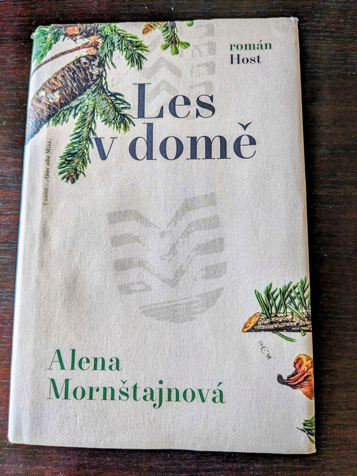
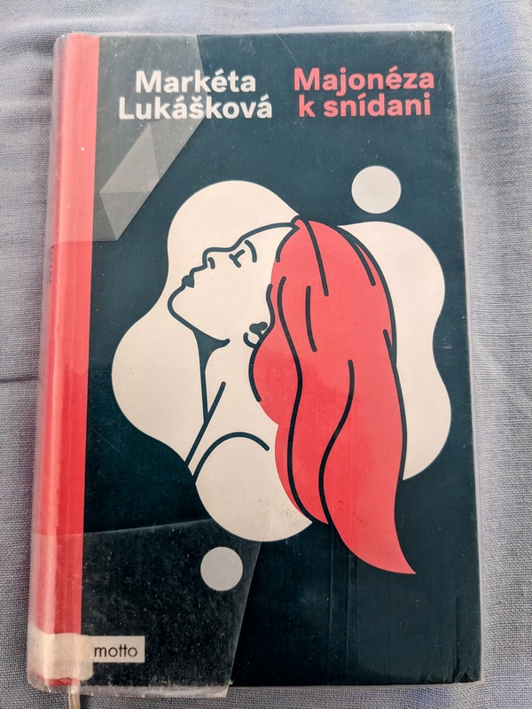
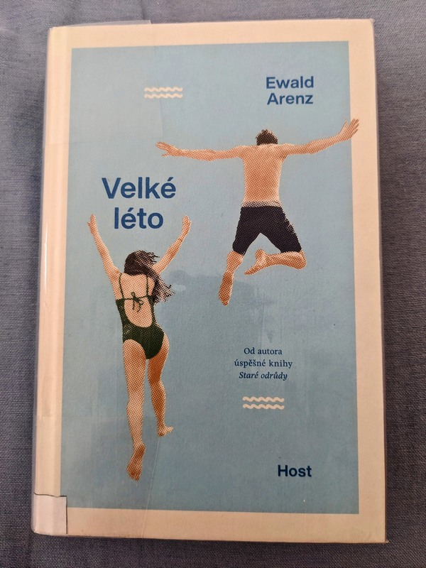
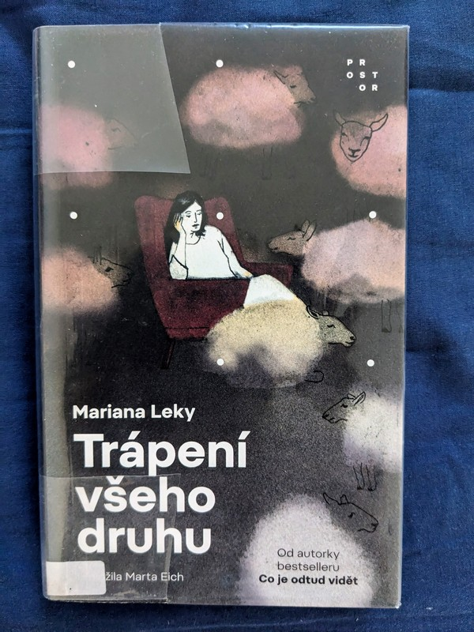
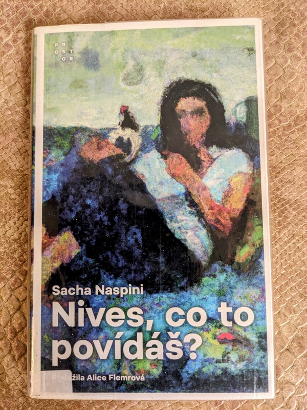
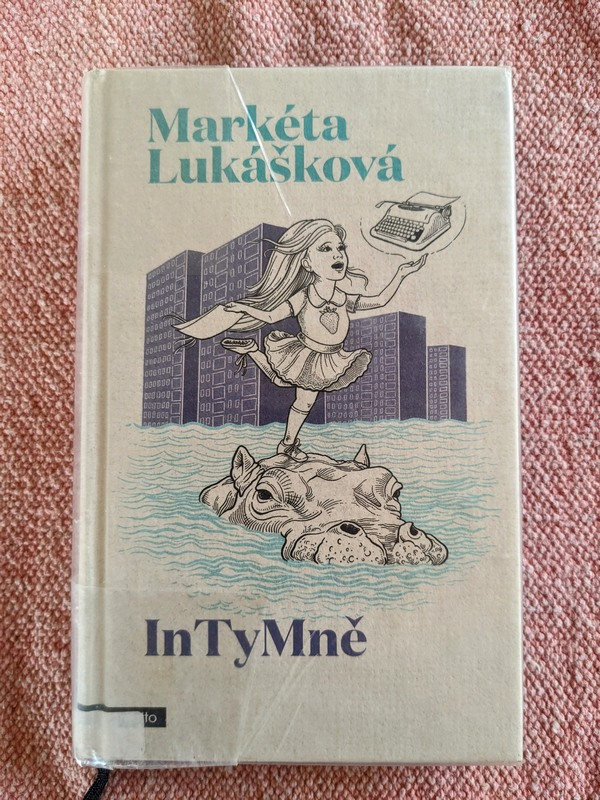
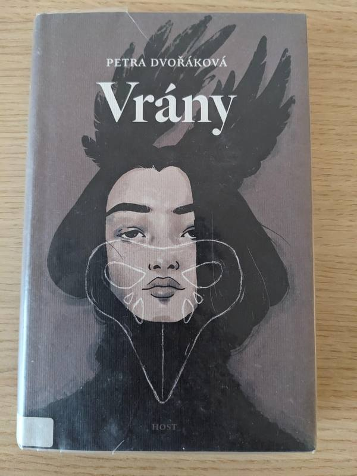

S dnešním upršeným počasím nás zdá se definitivně opouští prázdninová atmosféra posledních tropických dnů a na scénu opět přichází večery u krbu s dobrou knihou. Pokud by vám v tomto ohledu chyběla inspirace, přijměte pár tipů starého knihomola :-)
Honza Vojtko – Vztahy a mýty
Kniha s podtitulem Párová terapie do kapsy je z ranku populárně naučných psychologických publikací a díky svému kapesnímu formátu i čtivé a čtenáři srozumitelné formě ji pravděpodobně budete mít přečtenou raz dva. Každá kapitola si bere na paškál jeden vztahový mýtus a doplňuje ho názornými příklady z autorovy praxe psychoterapeuta. Není to vyloženě přelomová kniha, ale určitě patří k těm, které je fajn si přečíst, i když jsou vaše vztahy zrovna v pořádku.

Zdeňka Šíp Staňková – Děti jsou taky lidi
Projekt Děti jsou taky lidi v jistých kruzích společnosti budí určitou kontroverzi. Nesleduju ho natolik podrobně, abych to mohla říct s jistotou, ale přijde mi, že ta kritika je trochu neoprávněná a původní záměr autorky byl zcela jiný – a sice upozornit na zlo a fyzické i psychické násilí, které se na dětech i v současné době páchá a spoustě lidí to přijde normální. Desítky příběhů, které kniha zobrazuje, jsou toho smutným důkazem. Rozhodně nečekejte lehké čtení a ani nedoporučuju číst to na jeden zátah. Ale přečíst by si to měl každý. Protože ač se to zdá jako klišé, právě na dětech nejvíc záleží – na tom, aby si z dětství neodnášely šrámy, které by jednou mohly přenášet zase dál, až budou dospělí.

Delphine de Vigan – Podle skutečného příběhu
Francouzká autorka Delphine de Vigan pro mne byla dosud neznámou spisovatelkou, kterou jsem objevila skrze jednu oslavnou recenzi na sociálních sítích a zaujala mne natolik, že jsem knihu Podle skutečného příběhu přihodila do košíku při své nejbližší objednávce na ReKnihách. Zpočátku mě autofiktivní příběh o tvůrčí krizi spisovatelky a její toxické přítelkyni L. úplně neoslovil, nesednul mi jazyk vypravěčky, L. mě svými přechytřelými monology neskutečně vytáčela a celé se mi to zdálo takové moc „intoušské“, čím víc ale tajemná L. pronikala do autorčina života, tím více mně to celé začalo zajímat, až mne to nakonec zcela pohltilo a vzbudilo mou zvědavost a touhu po nějaké kruté pointě. Závěr knihy byl napínavý, i když s charakteristikou „thriller“ bych byla opatrnější, a přestože otevřený konec zde byl v podstatě nutností, některé věci se mi zdály nevysvětlené a jiné velmi nepravděpodobné. Celé dilema, na kterém je kniha postavena – tedy zda čtenáři skutečně prahnou v prvé řadě po non-fiction literatuře – mi přišlo tak nějak mimo. A to říkám zcela otevřeně jako čtenář, který má non-fiction plnou knihovničku. Suma sumárum – Podle skutečného příběhu je dílko, které se svým způsobem vymyká z toho, co běžně čtu, a určitě to bylo zajímavé vybočení z mých čtenářských kolejí, ale nejsem si jistá, zda si za nějaký ten týden či měsíc vzpomenu na něco, co ve mně tato kniha zanechala.

Alena Mornštajnová - Les v domě
Román, který jeho pověst předchází… Musím říct, že v celé té kauze “vykradeného osobního příběhu” jsem jednoznačně na straně spisovatelky a je mi upřímně líto, že si s sebou kniha hned od začátku nesla takové stigma, protože mi nepřišla špatná. Při čtení vám samozřejmě nebude lehko u srdce. To už je u této autorky asi tak nějak samozřejmé, ale v tomto případě je to bezútěšný příběh od začátku až do konce. Naprosto neexistující rodinné zázemí hlavní hrdinky, absence přátel a zpočátku i jakékoliv možnosti, jak se ze situace vymanit… Do toho samozřejmě šílené téma zneužívání rodinným příslušníkem, které je v knize naznačeno jen velmi symbolicky a je velká škoda, že kauza, která vydání knihy doprovázela a prozradila hlavní zápletku příběhu, čtenáři bere moment překvapení. Jediné, co mě trochu zklamalo, byl závěr příběhu - na to, jak se vše dlouho a postupně rozjíždělo, mi přišel trochu rychlý a odbitý, dialogy mezi matkou a dcerou málo uvěřitelné, chyběla mi nějaká větší konfrontace mezi hlavními postavami. Poslední strana knihy asi měla přinést šokující odhalení, ale za mě to bylo takové prvoplánové zakončení… Les v domě určitě stojí za přečtení, ale kniha tohoto léta to za mě úplně nebude.

Markéta Lukášková - Majonéza k snídani
Musím přiznat, že přestože mám tvorbu Markéty Lukáškové velmi ráda, z Majonézy k snídani mám pocity spíše rozpačité. Zvlášť pokud ji porovnám s její prvotinou Losos v kaluži, která byla svěží, originální a chytrá. Možná ještě pokud bych knihu zařadila do ranku literatury pro dospívající – koneckonců hlavní hrdinkou je maturantka Ema, která do kolonky „young adult“ přesně zapadá – nebyla bych v hodnocení tak přísná. Ale když na mne to celé působilo jako jedno velké klišé. Intelektuálka Ema si nerozumí s mámou ani se světem, dny tráví se svým nejlepším kamarádem Janem, který se i proti vůli rodičů snaží dostat na DAMU a prožívá coming-out ohledně své sexuální orientace. Přísně racionální Ema se poprvé v životě bláznivě zamiluje a zároveň se vydává pátrat po stopách víceméně nešťastných partnerských vztahů ve svém okolí. Právě tahle část je na celé knize asi tím nejzajímavějším – když Ema proniká hlouběji do rodinné historie a pátrá po příčinách rozpadu manželství jejích rodičů. Ale au, ty dialogy! Jakmile postavy začnou mluvit, nějak mi to celé nefunguje, je to strojené, nepravděpodobné, křečovité. Za mne tedy tentokrát spíše zklamání.

Ewald Arenz - Velké léto
V kontrastu s výše kritizovanou Majonézou – TOHLE bylo něco, krásná ukázka toho, jak by kniha s vlastně dosti podobnou tematikou měla vypadat. I tady je hlavním hrdinou teenager, šestnáctiletý Friedrich, který propadá z matematiky a latiny, a tak se přes léto místo dovolené s rodiči a sourozenci musí připravovat na reparát pod dohledem přísného dědečka. I tady máme motiv první velké lásky, kdy Friedrich na koupališti potkává Beate a na první pohled se do ní zamiluje. I tady hlavní hrdina poodhaluje minulost svých předků a především začátky vztahu svých prarodičů – děje se to ale spíše mimoděk při nálezu babiččiných deníků a ne tak prvoplánově jako v Majonéze. Čím ale román vyniká především, to je naprosto podmanivá poetika, s níž vás autor vtáhne do jednoho horkého bezstarostného náctiletého léta. Léta, kdy se toho děje zdánlivě málo, ale i v tom málu je celý svět – takového léta, které jsme zažili asi my všichni… Při tom všem se tak úplně nejedná o jednoduchou četbu k vodě, v závěru příběh naopak nabírá na dramatičnosti. Zároveň je zde ale i několik momentů, u kterých se budete když ne smát, tak minimálně usmívat. Třeba když si čtveřice hlavních hrdinů společně kupuje hrob, aby k sobě i po smrti měli blízko, a vám dojde, že v šestnácti neexistuje lepší důkaz přátelství na celý život :-) Zajímavostí je také fakt, že děj knihy je umístěn do 80. let, což poetiku příběhu svým způsobem také dotváří – dneska si už jen stěží umíme představit, jaké to bylo volat si z telefonní budky :-) Za mne rozhodně jedna z top knížek tohoto léta, kterou bych neváhala doporučit komukoliv.

Mariana Leky – Trápení všeho druhu
Útlá kniha plná krátkých příběhů z každodenního života, které německá autorka psala jako sloupky do časopisu o psychologii, mi svým charakterem hodně připomínala vyprávění Roberta Fulghuma, ač tady se, jak již samotný název napovídá, texty často točí okolo věcí neveselých. Jsou ale vyprávěny s empatií, lehkostí a laskavostí, a tak se toho smutného titulu knihy nemusíte bát.

Sacha Naspini – Nives, co to povídáš?
Tak toto byla skutečně zajímavá a originální knižní jednohubka. Nemyslím si, že bych si ještě za půl roku vzpomněla, o čem to celé bylo, ale velmi mě to bavilo. Rozjezd knihy je trochu pomalejší, na první dobrou to vypadá na příběh o trochu pošahané vdově, která si po manželově smrti do domu nastěhuje slepici, ale právě tato slepice je příčinou telefonátu starému známému, zvěrolékaři – a najednou se tu před vámi rozvíjí dialog, v němž oba hlavní aktéři vzpomínají na mládí a ze zdánlivě nevinného rozhovoru je tu najednou nečekané drama, které s každou další stránkou nabírá na intenzitě. Určitě to nebude kniha roku, ale minimálně za tu originální formu zpracování smekám.

Markéta Lukášková – InTyMně
Abych tu autorku jen nehanila, tato autobiografická kniha, jejíž hlavní součástí je vzpomínání na to, jaké to bylo vyrůstat v 90. letech (což mě - coby devadesátkové dítě – zahrnulo vlnou příjemné nostalgie), mne bavila velmi! Je to pohodová oddechovka, u které hrozí, že se budete často a nahlas smát – to upozorňuji jen pro případ, že si hodláte četbou krátit dojíždění do práce stejně jako já :-)

Petra Dvořáková - Vrány
Příběh krátký, ale tak silný, že vám z něj bude ještě dlouho smutno na duši. Příběh o tom, jak zraňující může být k dítěti vlastní a na první pohled spořádaná rodina – především matka posedlá pořádkem, odmítající přijmout jinakost své mladší dcery Báry. Za mě asi jedna z nejlepších knih autorky, kdy na malém prostoru dokázala vystavět velmi intenzivní, znepokojující atmosféru jedné dysfunkční rodiny a čtenáři před očima sehrát strhující drama se závěrem, který vám vezme dech.
